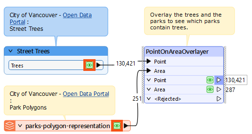
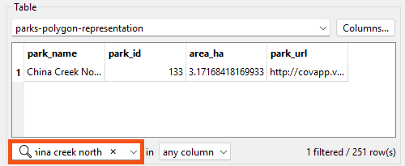
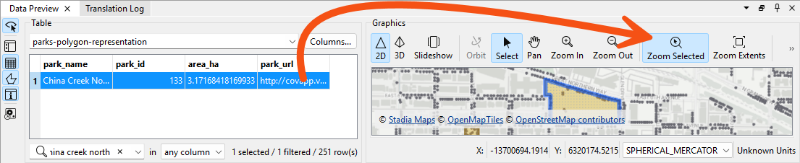
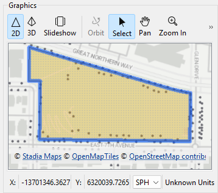
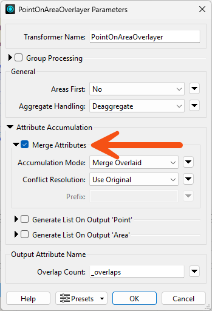
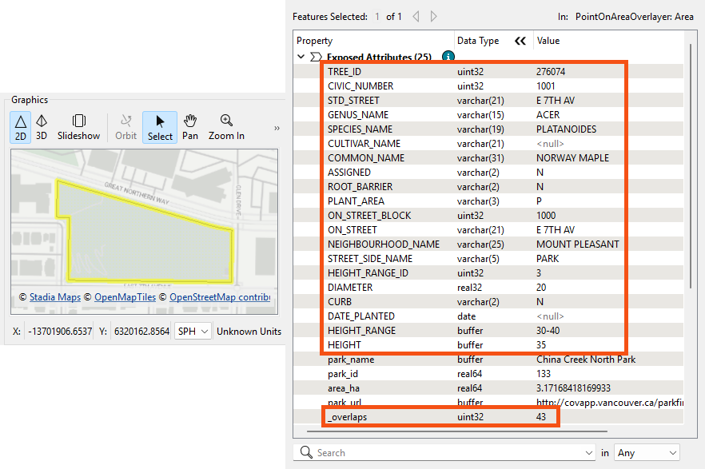
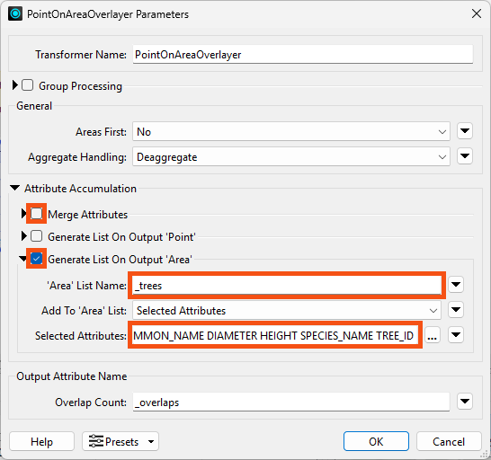
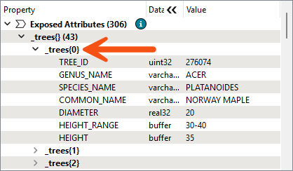

Learning Objectives
After completing this lesson, you’ll be able to:
- Understand the difference between the Merge Attributes and Generate List... options in Overlayer transformers.
- Create a list attribute using an Overlayer transformer.
- View a list attribute in the Record Information Window.
Instructions
In this lesson, you will:
- Scroll down to read the text below.
- Optional: You can view the video instead of reading the text. The video covers the text material.
- Complete the exercise by following the steps.
- Complete the Quiz toward the bottom of the page.
- Optional: Let us know if you found this lesson relevant to your role by filling out the survey at the bottom of the page.
- Click 'Next' to mark the lesson complete.
Resources
- Starting workspace
- For Safe Software-hosted training courses, you can find this on your virtual machine here: C:\FMEData\Workspaces\AdvancedDataTransformation\create-lists-using-transformers.fmw
- Complete workspace
- C:\FMEData\Workspaces\AdvancedDataTransformation\create-lists-using-transformers-complete.fmw
- street-trees.csv
- C:\FMEData\Resources\FormBasic\street-trees.csv
- parks-polygon-representation.geojson
- C:\FMEData\Resources\FormBasic\parks-polygon-representation.geojson
Exercise
Jennifer is ready to put her knowledge of lists into action!
She's been asked to identify the most common tree genus in Vancouver's parks.
She has point data of all the street trees in the city, as well as polygons of the parks. Now she needs to overlay these datasets (what you might know as a spatial join) to add information about each tree to the park polygons.
Jennifer knows that many FME transformers include a Generate List checkbox in the Attribute Accumulation section of their parameter dialog. For example:

For query transformers that return multiple results, such as the PointOnAreaOverlayer, these parameters can be used to generate a list to store the results.
So, Jennifer plans to merge the tree points with the park polygons using the PointOnAreaOverlayer. However, copying attributes from each tree to its respective park polygon isn't enough; what if there is more than one tree per park?
List attributes are perfect for this scenario: if more than one tree falls within the same park polygon, she can use a list attribute to store information for all trees in each park. The PointOnAreaOverlayer allows her to generate a list that stores the values for all points overlaid on the area.
Her goal workspace will:
- Read point data with information about trees.
- Read polygon data with information about Vancouver parks.
- Overlay the points and polygons using the PointOnAreaOverlayer.
- Use list attributes to store the values of all tree points within each park.
1) Open Starting Workspace
- Start FME Workbench (2026.1 or later).
- Open the starting workspace (C:\FMEData\Workspaces\AdvancedDataTransformation\create-lists-using-transformers.fmw).
2) Run the Workspace and Inspect the Data
- Run the workspace to generate data caches.
- Inspect both the Trees and parks-polygon-representation caches by clicking each cache while holding down the Ctrl or Cmd key.

First, we'd like to visually understand the degree of overlap between the datasets so we can spot-check the list results. We decide to inspect a local park, China Creek North Park.
With the two datasets in Data Preview, do the following.
- Search for
China Creek North using the Filter field at the bottom of Table View with the parks-polygon-representation table displayed.

- Navigate to the park by selecting the row in Table View and then using the Zoom to the Selected Features button in Graphics View:

- Visually confirm that there are over a dozen trees (the points) within China Creek North Park.

3) Set PointOnAreaOverlayer Parameters: Merge Attributes
How can we get a list of all trees in each park?
- Double-click the PointOnAreaOverlayer to open its parameters.
- By default, the checkboxes under Attribute Accumulation are unchecked, which means the area and point attributes are not being merged, and no list attributes are being created.
- Check Merge Attributes, leaving the other parameters disabled for now.

4) Run the Workspace
- Run the workspace
- Inspect China Creek North Park again using the procedure from step #2.
- The PointOnAreaOverlayer added an
_overlaps attribute that counts the number of points in each area.
- In the Record Information window, we can see that China Creek North Park has 43 overlaps, i.e., trees, but the polygon only has attributes from one of the trees, a Norway Maple.
- This is the result of merging the incoming records. The Merge Attributes option can only add attributes from one record. Because we want attributes from multiple records, we must use a list attribute.

5) Set PointOnAreaOverlayer Parameters: Generate List
- Open the PointOnAreaOverlayer parameters.
- Uncheck Merge Attributes.
- Check Generate List on Output ‘Area’.
- Name the list
_trees.
- Use Selected Attributes to select the attributes
COMMON_NAME, DIAMETER, HEIGHT, SPECIES_NAME, and TREE_ID:

6) Run the Workspace
- Run the workspace.
- Inspect China Creek North Park again.
- The Record Information window shows a list attribute,
_trees{}, which contains information from all tree points in the park.
- Click an individual element, _trees{0}, to expand it and view its attribute-value pairs.

We successfully used the PointOnAreaOverlayer to create a list called _trees{}, which stores the values of multiple tree points within each park polygon. Note how each numbered list element contains the same attributes: COMMON_NAME, DIAMETER, etc.
Now that we have lists of all the park trees, we can use list transformers to find the most common genus, which we'll do in the next lesson.
Leave Us Feedback on This Lesson